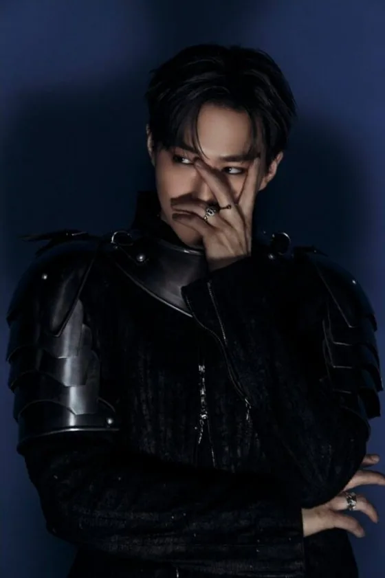
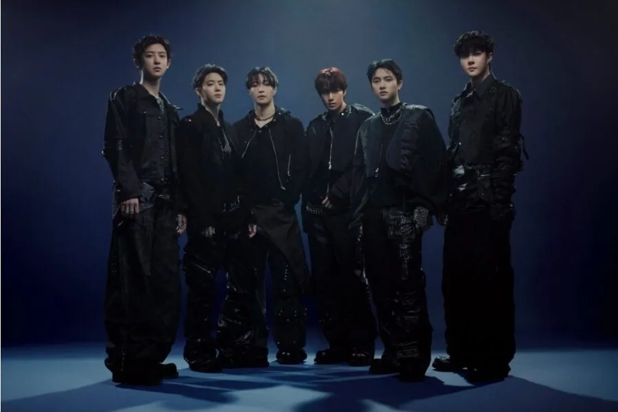
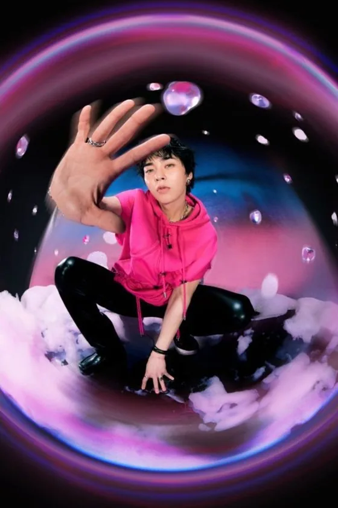
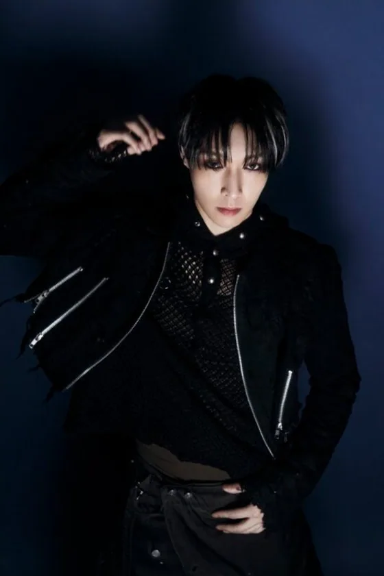
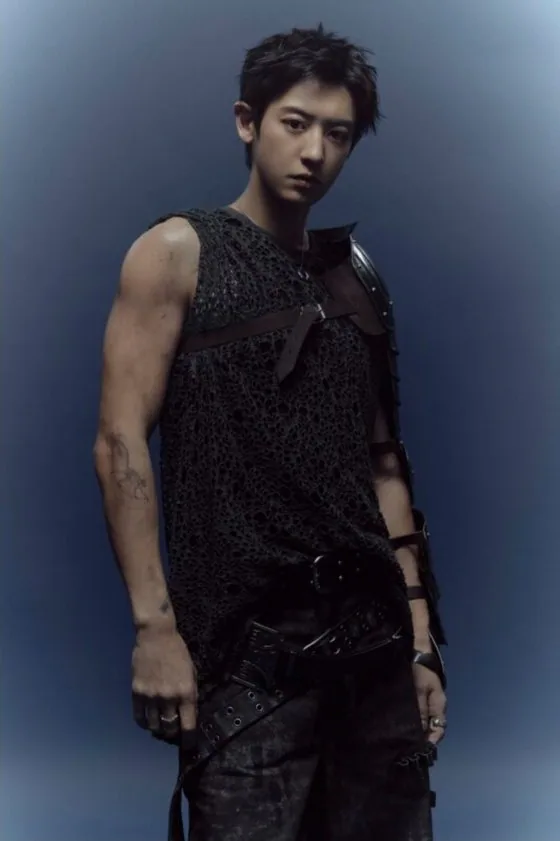
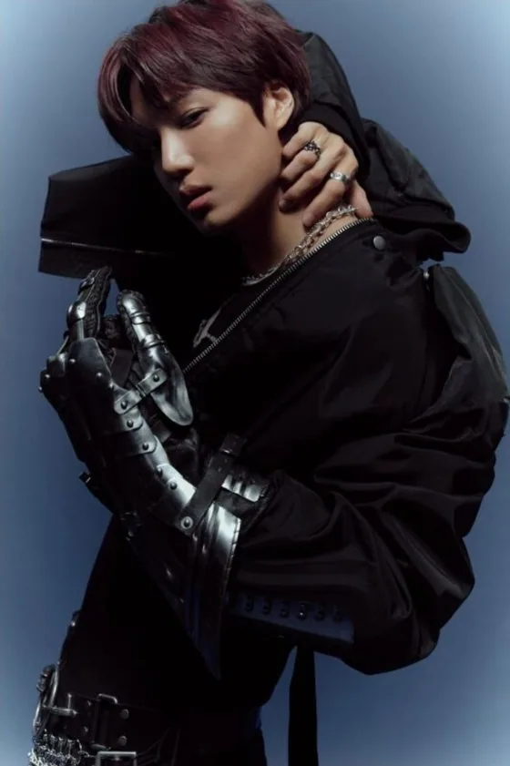
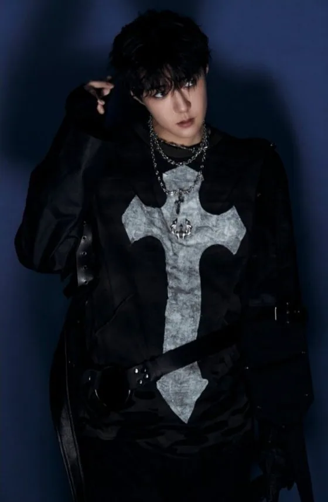

Suho
Suho (수호) · Leader, Lead Vocalist, Visual · Coréen

K-POP
Découvre EXO et les profils de ses membres sur IBASE Asian Pop.
Ouvrir la fiche interactiveHistoire : EXO (엑소) est un groupe sud-coréen de 9 membres sous SM Entertainment : Suho (leader), Xiumin, Lay, Baekhyun, Chen, Chanyeol, D.O., Kai et Sehun. Il a débuté le 8 avril 2012 à 12 membres avec le mini-album « MAMA ». Kris, Luhan et Tao ont quitté le groupe entre 2014 et 2015. Le 8 avril 2022, Lay a annoncé avoir quitté SM ; il a été retiré du site officiel de SM en 2025 mais participe au retour « REVERXE » (Xiumin, Baekhyun et Chen n'y participent pas). Sens du nom : abréviation de « EXOplanet ». Salutation officielle : « We are ONE! Hello, we are EXO! ». Fandom : EXO-L (le « L » signifie « love »). Couleur officielle : argent (non annoncée officiellement mais utilisée sur le merchandising et les publications anniversaire).
Débuts : 8 avril 2012 (premier mini-album « MAMA », débuts à 12 membres) · retour annoncé : « REVERXE »
Agence : SM Entertainment

Suho (수호) · Leader, Lead Vocalist, Visual · Coréen

Xiumin (시우민) · Sub-Vocalist, Sub-Rapper · Coréen

Lay (레이) · Main Dancer, Sub-Vocalist, Sub-Rapper · Chinois
Baekhyun (백현) · Main Vocalist · Coréen
Chen (첸) · Main Vocalist · Coréen

Chanyeol (찬열) · Main Rapper, Sub-Vocalist, Visual · Coréen
D.O. (디오) · Main Vocalist · Coréen

Kai (카이) · Main Dancer, Sub-Rapper, Sub-Vocalist, Center, Visual · Coréen

Sehun (세훈) · Lead Dancer, Lead Rapper, Visual, Maknae · Coréen
Kris (크리스) · Ancien membre (a quitté EXO le 15 mai 2014) · Main Rapper, Leader d'EXO-M · Sino-Canadien
Luhan (루한) · Ancien membre (a quitté EXO le 10 octobre 2014) · Lead Vocalist, Lead Dancer, Visual, Face of the Group · Chinois
Tao (타오) · Ancien membre (a quitté EXO en 2015) · Lead Rapper, Lead Dancer, Sub-Vocalist · Chinois